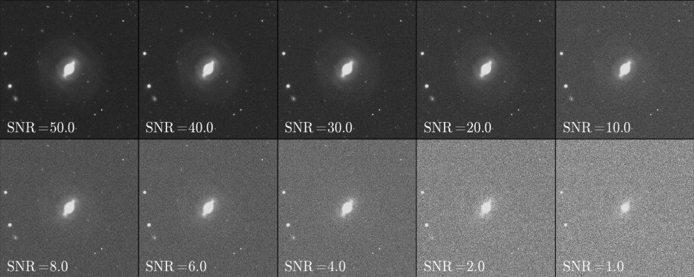

Leonardo Ferreira
Astrophysicist in development
@GitHub @Twitter @Lattes This page is under development *shovel picture*— The Stability of Galaxy Morphometry
Here we investigate how non-parametric morphology is affected by cosmological dimming, resolution degradation, noise and angular depth. Is it possible to classify galaxies even in bad scenarios? Where can we draw the line?
